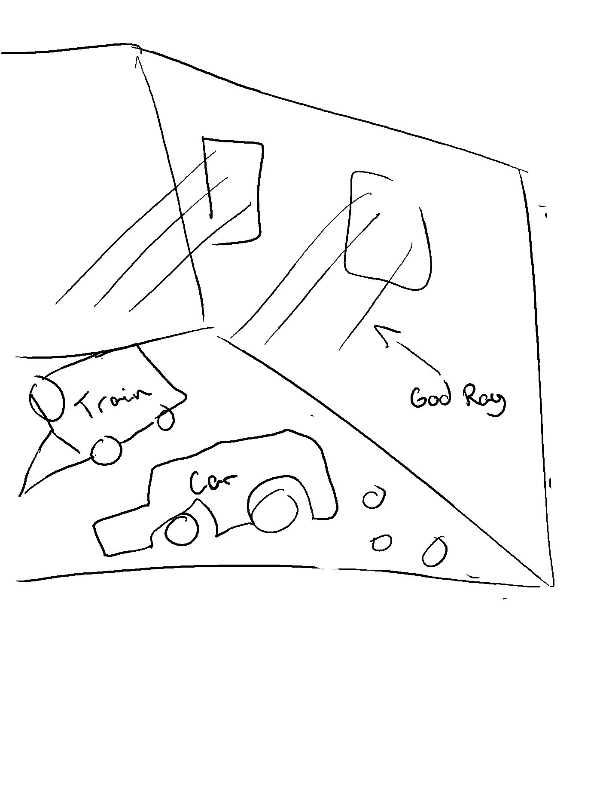

**Final Project Proposal**
Student name: Samuel Laporte
Sciper number: 366873
Scene description and motivation
================================
Describe the scene you plan to render. Use at least one motivational image.
The scene will show an old train and a modern car side by side. The vehicules will be inside a building with some window that will let light pass in creating god like ray. The floor will be highly detailed with the texture of normal mapping (maybe stone floor)
Here is a sketch and some reference photo

Feature list
============
Using the table below, list the features you'll use to achieve your render, and how they are used.
* Include the point counts, they should add up to *80 points*.
* If your list of features adds up to more than 80 points, you must reduce the point count for the features of your choice until the total reaches 80 points exactly.